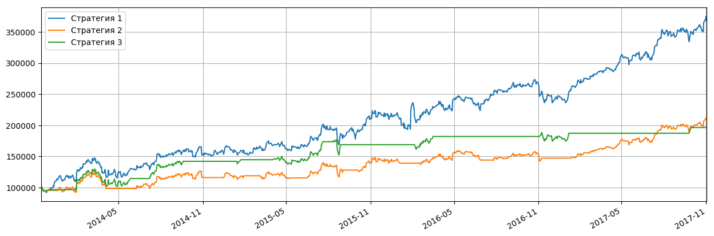

Котировки акций: Показать все
| Дата | Открытие | Минимум | Максимум | Закрытие | Объем |
|---|---|---|---|---|---|
| 2017-10-31 | 180.570007 ▲ | 178.940002 ▲ | 180.800003 ▲ | 180.059998 ▲ | 19 918 300.0 ▼ |
| 2017-10-30 | 179.259995 ▲ | 177.610001 ▲ | 180.690002 ▲ | 179.869995 ▲ | 24 353 200.0 ▼ |
| 2017-10-27 | 174.149994 ▲ | 173.899994 ▲ | 178.210007 ▲ | 177.880005 ▲ | 30 285 300.0 ▲ |
| 2017-10-26 | 171.380005 ▼ | 170.389999 ▲ | 172.289993 ▲ | 170.630005 ▲ | 11 833 100.0 ▼ |
| 2017-10-25 | 171.899994 ▼ | 168.889999 ▼ | 172.250000 ▼ | 170.600006 ▼ | 15 868 200.0 ▲ |
Японские свечи, объемы продаж, касательные 20-50:

Основные фин.показатели:
| Доходы (квартал), в млн.USD | 3 мес. 2017-06-30 | 3 мес. 2017-03-31 | 3 мес. 2016-12-31 | 3 мес. 2016-09-30 | 3 мес. 2016-06-30 |
|---|---|---|---|---|---|
| Общий доход | 9,321.00 | 8,032.00 | 8,809.00 | 7,011.00 | 6,436.00 |
| Общие эксплуатационные расходы | 4,920.00 | 4,705.00 | 4,258.00 | 3,889.00 | 3,702.00 |
| Операционный доход | 4,401.00 | 3,327.00 | 4,551.00 | 3,122.00 | 2,734.00 |
| Чистая прибыль | 3,894.00 | 3,064.00 | 4,273.00 | 2,379.00 | 2,283.00 |
| Пониженная прибыли на акцию (EPS) без ЧС | 1.32 | 1.04 | 1.43 | 0.82 | 0.78 |
| Баланс (квартал), в млн.USD | На 2017-06-30 | На 2017-03-31 | На 2016-12-31 | На 2016-09-30 | На 2016-06-30 |
| Всего текущих активов | 40,804.00 | 36,930.00 | 34,401.00 | 30,328.00 | 27,010.00 |
| Недвижимость/Имущество/Оборудование Всего | 14,668.00 | 13,032.00 | 11,803.00 | 10,778.00 | 9,756.00 |
| Всего активов | 73,843.00 | 68,714.00 | 64,961.00 | 59,674.00 | 55,739.00 |
| Общий долгосрочный долг | 0.00 | 0.00 | 0.00 | 0.00 | 0.00 |
| Всего обязательств | 7,362.00 | 6,526.00 | 5,767.00 | 5,559.00 | 5,356.00 |
| Общий капитал | 66,481.00 | 62,188.00 | 59,194.00 | 54,115.00 | 50,383.00 |
| Cash-flow (квартал), в млн.USD | 6 мес. 2017-06-30 | 3 мес. 2017-03-31 | 12 мес. 2016-12-31 | 9 мес. 2016-09-30 | |
| Поступления от операционной деятельности | 10,418.00 | 5,058.00 | 16,108.00 | 9,758.00 | |
| Поступления от инвестиционной деятельности | -11,331.00 | -5,891.00 | -11,739.00 | -9,764.00 | |
| Поступления от финансовой деятельности | -1,861.00 | -992.00 | -310.00 | 1,106.00 | |
| Чистый остаток денежных средств | -2,651.00 | -1,799.00 | 3,996.00 | 1,131.00 |
Полосы Боллинджера:
Последние финансовые новости: Показать все
| Дата | Заголовок | Источник |
|---|---|---|
| 2017-10-31 15:53 | Брокеры устанавливают Facebook, Inc. (FB). Целевая цена составляет $ 186,14 | dispatchtribunal |
| Facebook, Inc. (NASDAQ: FB) заработала консенсусную рекомендацию «Покупать» из пятидесяти рейтинговых фирм, которые в настоящее время покрывают компанию, сообщает Marketbeat.com. Два аналитика оценили акции с рекомендацией по продаже, три дали рекомендацию по удержанию, сорок три дали рекомендацию по покупке, а три из них дали сильную рекомендацию по покупке компании. Средняя 12-месячная целевая цена среди брокеров, которые покрыли акции в прошлом году, составляет 186,14 долларов США. Несколько брокерских компаний недавно прокомментировали FB. Barclays PLC подтвердил рейтинг «лишнего веса» и установил ценовую цель в размере 168 долларов США (по сравнению с $ 160,00) по акциям Facebook в исследовательской записке в среду, 12 июля. Jefferies Group LLC подтвердила рейтинг «buy» и установила цену в $ 192,00 (до $ 175,00) по акциям Facebook в исследовательской записке в четверг, 27 июля. Vetr повысил рейтинг Facebook до уровня «buy» до «buy» и установил ценовую цель в $ 180,74 для компании в исследовательской записке в понедельник, 25 сентября. Royal Bank of Canada подтвердил рейтинг «buy» и установил цену в $ 185,00 по акциям Facebook в исследовательской записке во вторник, 11 июля. Наконец, Morgan Stanley подтвердил рейтинг «лишнего веса» и установил цену в $ 195,00 (до $ 190,00) по акциям Facebook в исследовательской записке в понедельник, 2 октября. УВЕДОМЛЕНИЕ О НАРУШЕНИИ АВТОРСКОГО ПРАВА: Этот фрагмент контента был первоначально отправлен Трибуналом по рассылке и является единственным имуществом Трибунала по рассылке. Если вы читаете этот фрагмент контента на другом веб-сайте, он был скопирован незаконно и отправлен повторно в нарушение законодательства США и международного законодательства о товарных знаках и авторских правах. Оригинальную версию этого фрагмента можно прочитать на странице https://www.dispatchtribunal.com/2017/10/31/brokerages-set-facebook-inc-fb-price-target-at-186-14.html. В других новостях, В.П. Колин Стретч продал 750 акций акции в сделке, которая произошла во вторник, 25 июля. Акции были проданы по средней цене 165,29 долл. США, общая сумма сделки составила 123 967,50 долл. США. После сделки вице-президент теперь владеет 83 906 акциями компании стоимостью 13 868 822,74 доллара США. Продажа была раскрыта в форме подачи в SEC, которая доступна через веб-сайт SEC. Кроме того, директор Ян Кум продал 2 953 492 акций акции в сделке, которая произошла в среду, 16 августа. Акции были проданы по средней цене 170,17 долл. США на общую сумму 502 595 733,64 долл. США. Раскрытие этой продажи можно найти здесь. Инсайдеры продали 5 746 300 акций компании на сумму 979 833 429 долларов США за последние 90 дней. Корпоративным инсайдерам принадлежит 19,08% акций компании. Хедж-фонды и другие институциональные инвесторы недавно внесли изменения в свои позиции в компании. Arcadia Investment Management Corp MI увеличила свою долю в акциях Facebook на 20,0% в течение первого квартала. Arcadia Investment Management Corp MI теперь владеет 721 акциями акций социальной сети на сумму 102 000 долларов США после покупки еще 120 акций за этот период. D. Scott Neal Inc. увеличила свою долю в акциях Facebook на 1 358,0% во втором квартале. D. Scott Neal Inc. теперь владеет 729 акциями акций социальной сети на сумму 110 000 долларов США после покупки дополнительных 679 акций за этот период. Farmers & Merchants Investments Inc. увеличила свою долю в акциях Facebook на 4,4% во втором квартале. Farmers & Merchants Investments Inc. теперь владеет 809 акциями акций социальной сети на сумму 122 000 долларов США после покупки еще 34 акций в течение периода. Тихоокеанский центр финансовых услуг увеличил свою долю в акциях Facebook на 10,7% в течение первого квартала. Тихоокеанский центр финансовых услуг теперь владеет 910 акциями акций социальной сети на сумму 129 000 долларов США после покупки еще 88 акций в течение периода. Наконец, Mountain Capital Investment Advisors Inc купила новую позицию в акциях Facebook во втором квартале на сумму около 138 000 долларов США. Институциональные инвесторы владеют 57,24% акций компании. Акции Facebook (NASDAQ FB) в четверг торговались на 0,24%, достигнув 174,98 долларов. Объем торгов составил 12 602 238 штук. Фирма имеет рыночную капитализацию в размере 414,76 миллиарда долларов, соотношение P / E - 39,15 и бета 0,70. Компания имеет 50-дневную скользящую среднюю цену в 171.50 долларов США и 200-дневную скользящую среднюю цену в 159,49 доллара. Facebook имеет годовой минимум в 113,55 доллара США и годичный максимум в размере 176,74 доллара США. Facebook (NASDAQ: FB) в последний раз опубликовал результаты своих доходов в среду, 26 июля. Компания социальных сетей сообщила о прибыли в размере 1,32 долл. За акцию за квартал, превысив консенсус-прогнозы аналитиков в размере 1,13 долл. США на 0,19 долл. США. В течение квартала компания имела доход в размере 9,32 млрд. Долл. США по сравнению с консенсус-прогнозом в размере 9,19 млрд. Долл. США. Facebook имел доходность в размере 21,73% и чистую прибыль в размере 38,84%. Ежеквартальный доход фирмы увеличился на 44,8% по сравнению с аналогичным периодом прошлого года. За тот же квартал в предыдущем году компания разместила прибыль в размере 0,97 долл. США за акцию. В среднем аналитики ожидают, что Facebook опубликует прибыль в размере $ 5,34 за акцию за текущий финансовый год. Профиль компании Refreshed1 Получайте новости и рейтинги Facebook Inc. Ежедневно. Введите свой адрес электронной почты ниже, чтобы получить краткий обзор последних новостей и рейтингов аналитиков для Facebook Inc. и связанных с ними компаний с бесплатным ежедневным электронным бюллетенем MarketBeat.com. | ||
| 2017-10-31 14:42 | Взгляд на здоровье Facebook, Inc. (NasdaqGS: FB) | thestocktalker |
| После недавнего сканирования мы видим, что Facebook, Inc. (NasdaqGS: FB) имеет доходность акционеров -1,32% и доход акционеров (Mebane Faber) от -0,01133. Компании могут выпускать новые акции и выкупать собственные акции. Это может произойти одновременно. Инвесторы могут также использовать доход акционеров для оценки базовой ставки прибыли. Первое значение рассчитывается путем добавления дивидендной доходности к проценту выкупленных акций. Второе значение добавляет в погашение чистого долга к расчету. У акционеров есть возможность показать, сколько денег компания возвращает акционерам по нескольким направлениям. Инвесторы могут пытаться выяснить, какие акции будут способствовать повышению эффективности портфеля в течение следующих нескольких месяцев. Ценностные инвесторы могут искать текущую стоимость на рынке. Они, как правило, ищут сделки и заинтересованы в раскрытии тех акций, которые могут быть загружены для бега, но они вышли из-под контроля на Уолл-стрит. Инвесторы роста могут искать целевые компании, которые могут продвигать прибыль быстрее среднего. Это может включать в себя поиск тех отраслей, которые имеют сильные тенденции роста и подтвержденный послужной список сильных продаж и роста прибыли. Оценочные оценки Piotroski F-Score - это система подсчета очков между 1-9, которая определяет финансовую устойчивость фирмы. Оценка помогает определить, ценен ли запас компании или нет. Piotroski F-Score of Facebook, Inc. (NasdaqGS: FB) - 7 баллов. Девять из девяти указывают на акции с высокой стоимостью, в то время как оценка одного указывает на низкую стоимость. Оценка рассчитывается по рентабельности активов (ROA), возврату денежных средств по активам (CFROA), изменению в возврате активов и качеству заработка. Он также рассчитывается путем изменения зацепления или рычагов, ликвидности и изменения выпускаемых акций. Оценка также определяется изменением валовой прибыли и изменением оборота активов. ERP5 Rank - это инвестиционный инструмент, который аналитики используют для выявления недооцененных компаний. ERP5 рассматривает соотношение цены и предложения, доходность дохода, ROIC и 5-летний средний ROIC. ERP5 Facebook, Inc. (NasdaqGS: FB) - 5298. Чем ниже рейтинг ERP5, тем более недооцененной считается компания. Ранг MF (он же Волшебная Формула) - это формула, которая указывает на ценную торговую компанию по хорошей цене. Формула рассчитывается путем рассмотрения компаний с высокой доходностью дохода, а также высокой доходностью инвестированного капитала. MF Rank of Facebook, Inc. (NasdaqGS: FB) - 4281. Компания с низким рейтингом считается хорошей компанией, в которую можно инвестировать. Magic Formula была представлена в книге, написанной Джоэлом Гринблаттом под названием «Маленькая книга» что превосходит рынок ». Q.i. Значение Facebook, Inc. (NasdaqGS: FB) - 49. Q.i. Значение является полезным инструментом при определении того, недооценена ли компания или нет. Q.i. Значение рассчитывается с использованием следующих коэффициентов: доходность EBITDA, доходность, доходность FCF и ликвидность. Чем ниже Q.i. ценность, тем более недооцененной считается компания. Value Composite One (VC1) - это метод, который инвесторы используют для определения стоимости компании. VC1 of Facebook, Inc. (NasdaqGS: FB) - 71. Компания со значением 0 считается недооцененной компанией, а компания со стоимостью 100 считается завышенной компанией. VC1 рассчитывается с использованием цены на балансовую стоимость, цены продажи, EBITDA до EV, цены на денежный поток и цены на прибыль. Аналогично, Value Composite Two (VC2) рассчитывается с одинаковыми коэффициентами, но добавляет доход акционеров. Value Composite Two из Facebook, Inc. (NasdaqGS: FB) - 73. Facebook, Inc. (NasdaqGS: FB) имеет соотношение цены и предложения 7.770618. Это соотношение рассчитывается путем деления текущей цены акций на балансовую стоимость на акцию. Инвесторы могут использовать Price to Book, чтобы показать, как рынок отображает стоимость акции. При проверке некоторых других коэффициентов у компании отношение цены к денежному потоку составляет 26.650768, а отношение текущей цены к прибыли - 39.347893. Отношение P / E является одним из наиболее распространенных коэффициентов, используемых для определения того, переоценивается или недооценена компания. Рост свободного денежного потока (рост FCF) - это свободный денежный поток текущего года за вычетом свободного денежного потока за предыдущий год, разделенный на свободный денежный поток в прошлом году. FCF Growth of Facebook, Inc. (NasdaqGS: FB) - 2.178414. Свободный денежный поток (FCF) - это денежные средства, полученные компанией за вычетом капитальных затрат. Эта денежная наличность - это то, что компания использует для выполнения своих финансовых обязательств, таких как платежи по долгам или выплата дивидендов. Показатель бесплатного денежного потока (FCF Score) - полезный инструмент для расчета роста свободного денежного потока с гарантией свободного денежного потока - это дает инвесторам общее качество свободного денежного потока. FCF Score of Facebook, Inc. (NasdaqGS: FB) - 2.120357. Эксперты говорят, что чем выше значение, тем лучше, поскольку это означает, что свободный денежный поток высок, или изменчивость свободного денежного потока низкая или и то, и другое. Оценка валовой маржи рассчитывается путем изучения валовой маржи и общей стабильности компании в течение 8 лет. Оценка - это число от одного до ста (1 из лучших и 100 наихудших). Валовой показатель маржи Facebook, Inc. (NasdaqGS: FB) равен 37. Чем стабильнее компания, тем ниже оценка. Если со временем компания будет менее стабильной, у них будет более высокий балл. Индекс цен Индекс цен - это коэффициент, который указывает на возврат цены акций за прошлый период. Индекс цен на акции Facebook, Inc. (NasdaqGS: FB) за прошлый месяц составил 1.05423. Это рассчитывается путем принятия текущей цены акций и деления на цену акций месяц назад. Если коэффициент больше 1, то это означает, что за месяц произошло увеличение цены. Если отношение меньше 1, то мы можем определить, что произошло снижение цены. Аналогичным образом, инвесторы ищут цену акций за 12 месяцев. Индекс цен 12 м для Facebook, Inc. (NasdaqGS: FB) равен 1.35486. Некоторые из лучших финансовых прогнозов формируются с использованием различных финансовых инструментов. Диапазон цен 52 недели - это один из инструментов, который инвесторы используют для определения самой низкой и самой высокой цены, по которой акции торговались за предыдущие 52 недели. Диапазон цен Facebook, Inc. (NasdaqGS: FB) за последние 52 недели составляет 1. 52-недельный диапазон можно найти в сводке котировок акций. Вы когда-нибудь задавались вопросом, как инвесторы предсказывают позитивный импульс цены акций? Крест SMA 50/200, также известный как «Золотой крест», представляет собой пятидесятидневное скользящее среднее, разделенное на двухсотдневную скользящую среднюю. SMA 50/200 для Facebook, Inc. (NasdaqGS: FB) в настоящее время 1.12646. Если Золотой Крест больше 1, то 50-дневная скользящая средняя превышает 200-дневную скользящую среднюю, что указывает на положительный импульс цены акций. Если золотой крест меньше 1, то 50-дневная скользящая средняя ниже 200-дневной скользящей средней, указывая на то, что цена может снизиться. | ||
| 2017-10-31 12:08 | Facebook (FB) Q3 Заработки: все глаза на доходы от цифровых объявлений | nasdaq |
| Гигант социальных сетей, Facebook Inc FB собирается сообщить о своих доходах за третий квартал 2017 года 1 ноября. Как всегда, инвесторы будут сосредоточены на доходах от цифровых рекламных акций компании, что является основным источником доходов от рекламы. В течение короткого промежутка времени Facebook стал свидетелем значительных затрат на онлайн-и мобильные рекламные расходы. За последние несколько кварталов доходы от мобильной рекламы постоянно увеличивались как часть общей выручки. Примерно 87% от общего объема рекламных доходов во втором квартале 2017 года приходилось на мобильные телефоны по сравнению с 85% в первом квартале 2017 года и 84% в четвертом квартале 2016 года. Увеличение мобильной рекламы связано с тем, что мобильные объявления имеют гораздо большее значение отзыва отзыва, чем другие медийные. Поскольку маркетологи переходят на мобильный, Facebook с энтузиазмом монетизирует этот сдвиг. Facebook использует целевую рекламу, чтобы реклама достигла самой восприимчивой аудитории. Facebook, Inc. Цена и EPS Сюрприз Facebook, Inc. Цена и EPS Сюрприз | Facebook, Inc. Как отметил старший аналитик eMarketer Моника Пирт, «рекламодатели все чаще требуют большей грамотности в планировании возможностей для охвата потребителей, а Google и Facebook позиционируют себя на переднем крае этой кривой спроса, будучи рекламными издателями с некоторыми из лучшие в своем классе возможности таргетинга на рынке цифровых объявлений ». Facebook и Alphabet GOOGL доминируют на внутреннем рынке цифровых объявлений. Кроме того, огромная пользовательская база Facebook более 2 миллиардов в сочетании с сильной пользовательской базой Instagram, составляющей 800 миллионов, делает ее очень привлекательной для рекламодателей. Ожидается, что рекламные продукты, такие как Dynamic Ads и Instagram Stories, будут продавать доходы от цифровых объявлений в ближайшем квартале. В последние несколько месяцев Facebook также запустил несколько новых продуктов, чтобы сделать свои объявления более эффективными и актуальными. К ним относятся Оптимизация ценности и Аудитория Lookalike. Чтобы еще больше укрепить свои позиции, компания теперь фокусируется на живом видео, и ряд прямых трансляций - шаг в этом направлении. В Facebook рекламодатели приняли «стратегии рекламы для мобильных устройств». Facebook, Inc. Доход (TTM) Facebook, Inc. Доход (TTM) | Facebook, Inc. В третьем квартале Facebook запустил новую вкладку под названием «Смотреть», которая будет посвящена исключительно просмотру видео. На этот раз часы не будут вносить вклад в рекламные доходы, но Facebook тестирует объявления в этой службе. Это должно стать долгосрочным драйвером роста. Сообщается, что Facebook будет делиться доходами с создателями в соотношении 55:45, подобно YouTube YouTube. Хотя Facebook утверждает, что доходы от рекламы увеличатся, она столкнется с более жесткими сравнениями за год. До сих пор рекламная нагрузка, которая стала движущей силой рекламных доходов, перестанет быть в ближайшие кварталы. Следовательно, уровень доходности рекламы будет «ослабевать» после середины 2017 года. Также идет конкуренция со стороны Snapchat SNAP, Twitter TWTR и Alphabet для рекламных долларов. В настоящее время в Facebook есть Занки 1 (Сильная Покупка). Вы можете увидеть полный список сегодняшних акций Zacks # 1. Оставайтесь настроенными для большего !!!!!!!!!!!!! Следующая амазонка Уолл-Стрит Закс EVP Кевин Матрас считает, что этот знакомый запас только начал подниматься, чтобы стать одной из самых больших инвестиций всех времен. Это возможность раз в год инвестировать в чистый гений. Нажмите для подробностей >> Хотите получить последние рекомендации от Zacks Investment Research? Сегодня вы можете скачать 7 лучших акций на следующие 30 дней. Нажмите, чтобы получить бесплатный отчет Facebook, Inc. (FB): Отчет о свободном запасе Alphabet Inc. (GOOGL): Отчет о свободном запасе Twitter, Inc. (TWTR): Отчет о свободном запасе Snap Inc. (SNAP): Отчет о свободном запасе Чтобы прочитать эту статью на Zacks.com, нажмите здесь. Инвестиционные исследования Zacks Мнения и мнения, выраженные здесь, являются мнениями и мнениями автора и не обязательно отражают мнения Nasdaq, Inc. | ||
| 2017-10-31 08:04 | Grisanti Capital Management LLC инвестирует $ 8,82 млн в акции Facebook, Inc. (FB) | dispatchtribunal |
| В течение второго квартала компания Grisanti Capital Management приобрела новую долю в Facebook, Inc. (NASDAQ: FB), согласно самой последней информации в Комиссии по ценным бумагам и биржам. Институционный инвестор купил 58 438 акций компании социальной сети, стоимостью около 8 822 000 долларов США. Facebook составляет около 3,8% акций Grisanti Capital Management LLC, что делает ее акции ее восьмой по величине. Ряд других хедж-фондов также недавно купил и продал акции акций. В течение 1 квартала Arcadia Investment Management Corp MI сняла свою долю в акциях Facebook на 20,0%. Arcadia Investment Management Corp MI теперь владеет 721 акциями акций социальной сети на сумму 102 000 долларов США после покупки еще 120 акций за этот период. D. Scott Neal Inc. подняла свою долю в акциях Facebook на 1 358,0% во втором квартале. D. Scott Neal Inc. теперь владеет 729 акциями акций социальной сети на сумму 110 000 долларов США после покупки дополнительных 679 акций за этот период. Farmers & Merchants Investments Inc. подняла свою долю в акциях Facebook на 4,4% в течение второго квартала. Farmers & Merchants Investments Inc. теперь владеет 809 акциями акций социальной сети на сумму 122 000 долларов США после покупки еще 34 акций в течение периода. Тихоокеанский центр финансовых услуг поднял свою долю в акциях Facebook на 10,7% в течение первого квартала. Тихоокеанский центр финансовых услуг теперь владеет 910 акциями акций социальной сети на сумму 129 000 долларов США после покупки еще 88 акций в течение периода. Наконец, Watermark Asset Management Inc. приобрела новую позицию в акциях Facebook в течение первого квартала на сумму 141 000 долларов США. 57,27% акций в настоящее время принадлежат хедж-фондам и другим институциональным инвесторам. В других новостях вице-президент Colin Stretch продал 750 акций компании в сделке, которая произошла во вторник, 8 августа. Акции были проданы по средней цене 171,88 долл. США на общую сумму 128 910,00 долл. США. После сделки вице-президент теперь владеет 82 406 акциями компании стоимостью около 14 161 943,28 долларов. Продажа была раскрыта в форме подачи в Комиссию по ценным бумагам и биржам, к которой можно получить доступ через веб-сайт SEC. Кроме того, инсайдер Кристофер К. Кокс продал 16 000 акций компании в сделке, которая произошла в понедельник, 7 августа. Акции были проданы по средней цене 169,95 долларов США, общая сумма сделки составила 2 719 200,00 долларов США. По завершении сделки инсайдер теперь владеет 180 871 акциями компании стоимостью около 30 739 026,45 долларов США. Раскрытие этой продажи можно найти здесь. Инсайдеры продали в общей сложности 5 705 933 акций компании на сумму 972 931 125 долларов США за последние девяносто дней. 19.08% акций в настоящее время принадлежит инсайдерам. Ряд аналитиков-аналитиков взвесили акции FB. Zacks Investment Research понизило рейтинг Facebook до «холдинга» в рейтинге «покупать» в среду, 9 августа. Stifel Nicolaus переиздал рейтинг «купить» и установил целевую цену в $ 200,00 (ранее от $ 170,00) по акциям Facebook в исследовательской записке в четверг, 27 июля. Wedbush переиздал рейтинг «покупать» акции Facebook в исследовательской записке в четверг, 27 июля. Credit Suisse Group переиздала рейтинг «покупать» акции Facebook в исследовательской записке в среду, 11 октября. Наконец, Macquarie установила целевую цену в $ 175,00 на Facebook и дала акции рейтинг «покупать» в заметке исследования в понедельник, 24 июля. Два аналитика оценили акции с рейтингом продажи, двое дали рейтинг холдинга, сорок пять выпустили рейтинг покупки, а два присвоили компании сильный рейтинг покупки. Компания имеет средний рейтинг «Покупать» и достижение консенсусной цены в размере 186,72 долларов США. Facebook, Inc. (NASDAQ: FB) открылся в 179.87 во вторник. 50-дневная скользящая средняя составляет $ 171,82, а ее 200-дневная скользящая средняя составляет $ 161,20. Фирма имеет рыночную капитализацию в размере 522,38 млрд. Долл. США, соотношение цены и прибыли 40,26 и бета 0,70. Facebook, Inc. имеет 12-месячный минимум $ 113,55 и 12-месячный максимум $ 180,69. Профиль компании Facebook, Inc ориентирован на создание продуктов, которые позволяют людям подключаться и совместно использовать мобильные устройства, персональные компьютеры и другие поверхности. Продукты Компании включают Facebook, Instagram, Messenger, WhatsApp и Oculus. Facebook позволяет людям подключаться, обмениваться, открывать и общаться друг с другом на мобильных устройствах и персональных компьютерах. Количество просмотров: ArticleHistoryID = 12377500 & постдатировать = 2017-10-31 & тип = F & ID = 2395293 Хотите узнать, какие другие хедж-фонды держат FB? Посетите HoldingsChannel.com, чтобы получить последние 13F-заявки и инсайдерские сделки для Facebook, Inc. (NASDAQ: FB). Получайте новости и рейтинги Facebook Inc. Ежедневно. Введите свой адрес электронной почты ниже, чтобы получить краткий обзор последних новостей и рейтингов аналитиков для Facebook Inc. и связанных с ними компаний с бесплатным ежедневным электронным бюллетенем MarketBeat.com. | ||
| 2017-10-31 07:09 | Facebook Inc. (FB) - Лучше в зеркале заднего вида ?. FB имеет большие надежды на недавний квартал, но будущий рост сомнительный | investorplace |
| Facebook Inc. () сообщает о доходах 1 ноября, и инвесторы ожидают больших результатов. Консенсус заключается в том, что он будет зарабатывать 1,28 долл. На акцию при доходах в размере 9,88 млрд. Долл. США. Это будет означать рост 41% в верхней строке и 49% в нижней строке, по сравнению с тем же кварталом год назад. Но аналитики шепчут, что прибыль может составить $ 1,40 за акцию, поэтому ожидайте, что акции начнут расти. Facebook уже является одним из самых ценных акций на рынке, увеличившись на 54% до 2017 года, что более чем удваивает доходность по среднему значению NASDAQ. Он также продолжал расти, так как его цена за прибыль несколько упала, что означает, что это оправдало доверие спекулянтов. Но инвесторы не покупают то, что вы сделали. Они покупают то, что вы собираетесь делать. Улучшает ли Facebook внешний вид зеркала заднего вида? Важно отметить, что компания не просто служба Facebook больше. Facebook - это Instagram. Это Посланник. Это Whatsapp. Это облачная сеть и рекламная сеть. Его запасы выросли по сравнению с Alphabet Inc. (), которые выросли на 700% за последние пять лет против 200% акций Google. Выгода FB даже удвоила прибыль Amazon.com Inc. () за этот период, а основатель Марк Цукерберг - единственный миллиардер в списке Forbes 400, чье состояние смогло не отставать от основателя Amazon Джеффа Безоса, самый богатый человек, в 2017 году. | ||
Рекомендации аналитиков:
Стратегии:
Индекс RSI:

Индекс MACD:

Сигнальная шкала 1: